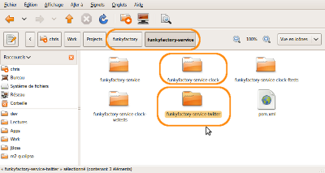
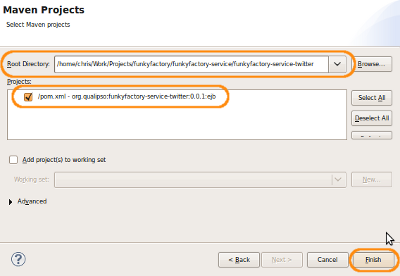
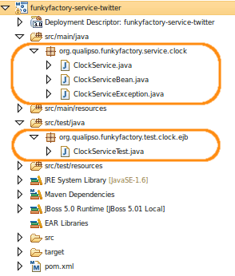
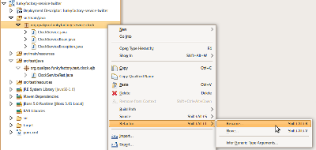
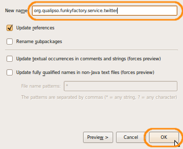
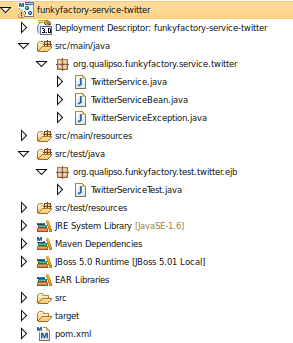

Creating a new service
The goal of this multiparts tutorial is to make you create a fully-functionnal service for the Qualipso factory, a service that will use all the functionnalities provided by the Qualipso factory. The tutorial will address all the aspects of the factory, and you will learn how and when to use them. It will go gently about technologies (EJB, WebServices, JAAS, Eclipse, ...), so you may be able to follow it without expert knowledge about them. Still, it will be easier if you already know the basic concepts of those technos. The only strong requierement is that you already have a working and configured environment, as described here.
On this first part of the tutorial, you will learn how to create a new basic empty service (based on the clock template), so that you have the necessary structure to develop a real service.
The service that you will create will be a local twitter service (no connection to the real Twitter), allowing a user to tweet about its activites under its profile.
Checklist
Here is the checklist of everything that you will do on this level:
Step 1: Create a new project
Each service correspond to three differents projects under Eclipse:
- a project containing the service itself, and its unit tests
- a project containing the functional tests of the service
- a project containing the webservice tests of the service
Right now, you need at least one project for the service itself (you will create the functional and webservices tests afterward, once you have basic functionalities for the service). You will create this project by copying and modifying the template existing project (funkyfactory-service-clock):
- Go in the funkyfactory/funkyfactory-service folder, duplicate the funkyfactory-service-clock folder, and rename it funkyfactory-service-twitter 
-
Go in the newly created funkyfactory-service-twitter, and edit the pom.xml file. You need to replace the following elements:
- artifactid -> funkyfactory-service-twitter
- name -> funkyfactory-service-twitter
- version -> 0.0.1
- finalName -> funkyfactory-service-twitter
- Still in the newly created funkyfactory-service-twitter, remove the "target" folder if it's present.
- In Eclipse, import the funkyfactory-service-twitter as a Maven project: 
- Once imported, files and packages in the project still have the "Clock" in their name:  You need to change that, using the "Refactor" function of Eclipse. Right-click on the "org.qualipso.funkyfactory.service.clock" package, in the "src/main/java" folder, and in the contextual menu, select "Refactor" -> "Rename...":  Change the name to org.qualipso.funkyfactory.service.twitter and click on "OK": 
-
Do the same refactoring for the following elements:
- ClockService.java -> TwitterService.java
- ClockServiceBean.java -> TwitterServiceBean.java
- ClockServiceException.java -> TwitterServiceException.java
- org.qualipso.funkyfactory.test.clock.ejb -> org.qualipso.funkyfactory.test.twitter.ejb
- ClockServiceTest.java -> TwitterServiceTest.java
- Once this is done, the project content should look like this: 
{kind=link}
{kind=link}
{kind=link}
{kind=link}
{kind=link}
{kind=link}
{kind=link}
Step 2: Define the service interface
Once the project infrastructure is done, the first thing to do is to define the interface of the service you want to create. This is done in the TwitterService.java file, in src/main/java.
-
Define a Java interface, called "TwitterService". This interface should extend the FactoryService interface, provided by the factory, in order for the service to be recognised as an abstract service. This is mandatory.
public interface TwitterService extends FactoryService { } -
In this interface, define the methods that you want your service to provide to others. Don't forget that the service is stateless: it doesn't maintain any session information between two requests. So you need to design your methods signatures so that all necessary information are passed to the service. One exception to that is the name of the current user, which is taken care of by the authentication and the membership service (more on that later).
In this example, the TwitterService will represent the tweet with a Tweet class. This Tweet class will be a factory resource, managed by the TwitterService (it will be defined later in this tutorial).
The TwitterService defines the following methods:
- twit(String tweet) create a new tweet for the currently logged user
- Tweet[] getAllTweets(String userProfilePath) returns all tweets of specified user
Of course, those methods are not enough for a real twitter service, but they are enough for this tutorial.
Thoses methods should be defined as throwing a TwitterServiceException, an exception specific for your service. This exception is defined in the file of the same name (more on that on the next step).
public interface TwitterService extends FactoryService { public void twit(String tweet) throws TwitterServiceException; public Tweet[] getAllTweets(String userProfilePath) throws TwitterServiceException; } -
Once the methods are defined, it is necessary to make this interface remotely accessible. The service should provide two remote access: a RMI remote access, for other EJB or servlets for example, and a web service access, in SOAP. Both those access are defined by adding specific annotations to the interface.
To provide a RMI remote access, you only need to add a @Remote annotation to the interface itself:
@Remote public interface TwitterService extends FactoryService { public void twit(String tweet) throws TwitterServiceException; public Tweet[] getAllTweets(String userProfilePath) throws TwitterServiceException; } -
To provide a web service SOAP remote access, you need to add several annotations:
- You need to add a @WebService annotation on the interface itself. In this annotation, you define the name under which the generated webservice will be known, and its namespace. As a convention, in the factory, the webservice name is the same as the interface, and the target namespace is http://org.qualipso.funkyfactory.ws/service (but you can change if you have a good reason to do so)
- You also need to add a @SOAPBinding annotation to the interface, to define which SOAP binding the web service will use. As a convention, in the factory, the web service use a RPC binding (same thing, you can change that if you have a good reason)
- You need to add a @WebMethod annotation to each and all methods that you want to be accessible through the webservice access, that is ALL methods defined in the interface, in the case of a FactoryService interface.
- Finally, you need to add a @WebResult annotation to each method that return a result. The annotation define the SOAP name that will contains the return value.
@Remote @WebService(name = "TwitterService", targetNamespace = "http://org.qualipso.funkyfactory.ws/service") @SOAPBinding(style = SOAPBinding.Style.RPC) public interface TwitterService extends FactoryService { @WebMethod public void twit(String tweet) throws TwitterServiceException; @WebMethod @WebResult(name = "tweets") public Tweet[] getAllTweets(String userProfilePath) throws TwitterServiceException; }With those annotation, JBoss will automatically provide a web service SOAP remote access to the service, following the preferences specified in the annotations.
Step 3: Define the service exception
The interface is declaring methods that return a TwitterServiceException exception. This class is defined in the TwitterServiceException.java file, in src/main/java. You should have a template implementation of this file, thanks to the refactoring of ClockServiceException.java. This template implementation is enough for the example, and you shouldn't have to modify anything for this tutorial.
Such a service exception extends the FactoryException class, and should implement three constructors, for each and both parameters (the exception message and the root exception that caused this exception). It doesn't need any other methods, as everything is defined in the FactoryException class (especially accessors methods). The service exception class also need to be annotated with the @WebFault annotation, so that the exception can be propagated through SOAP messages, when the service is accessed through its webservice interface.
Again, if you refactored the ClockServiceException.java, you should have a perfectly functionnal TwitterServiceException, and you don't need to change anything in it.
conclusion lien vers suivant.